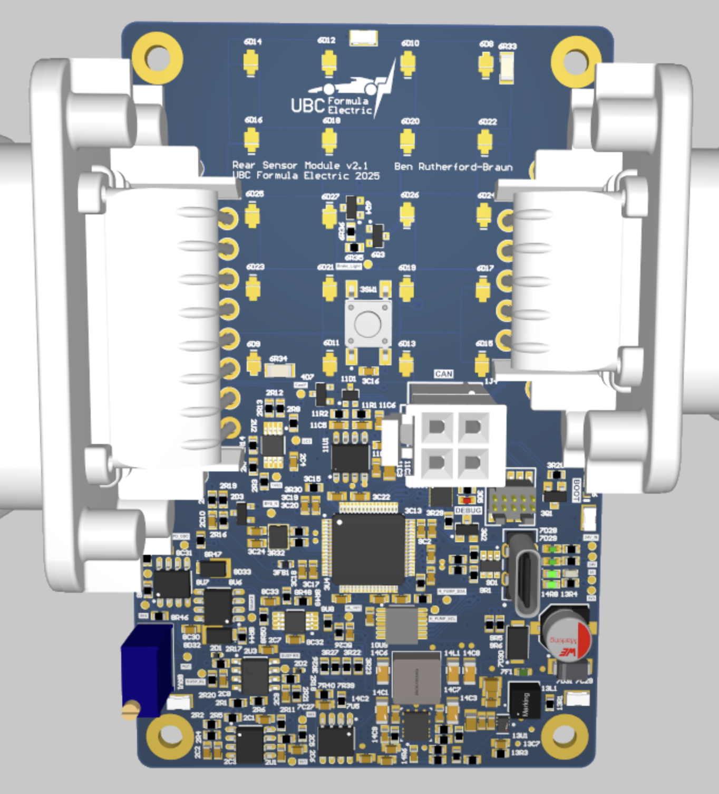
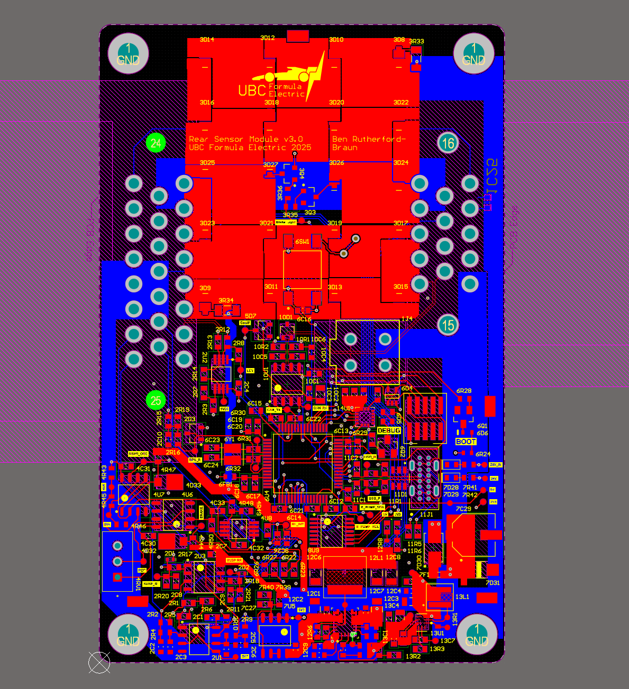
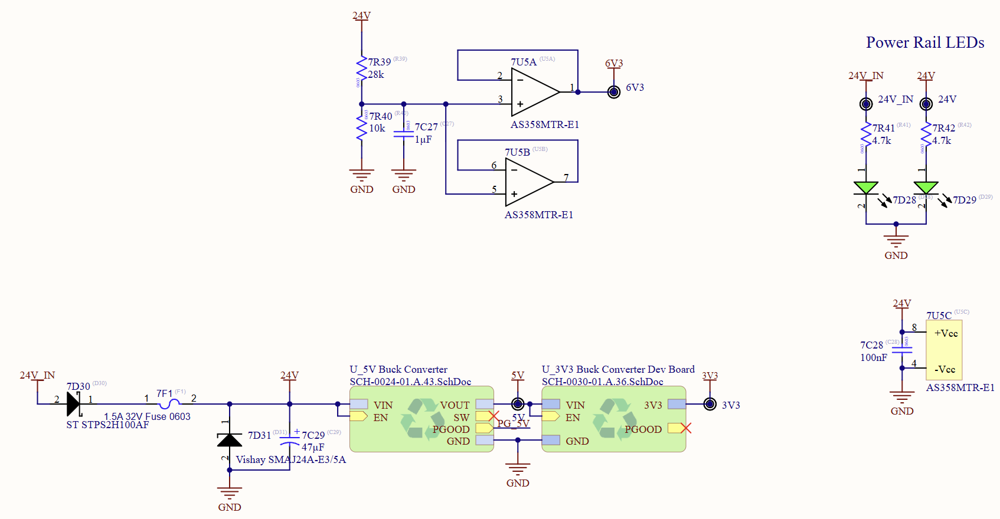
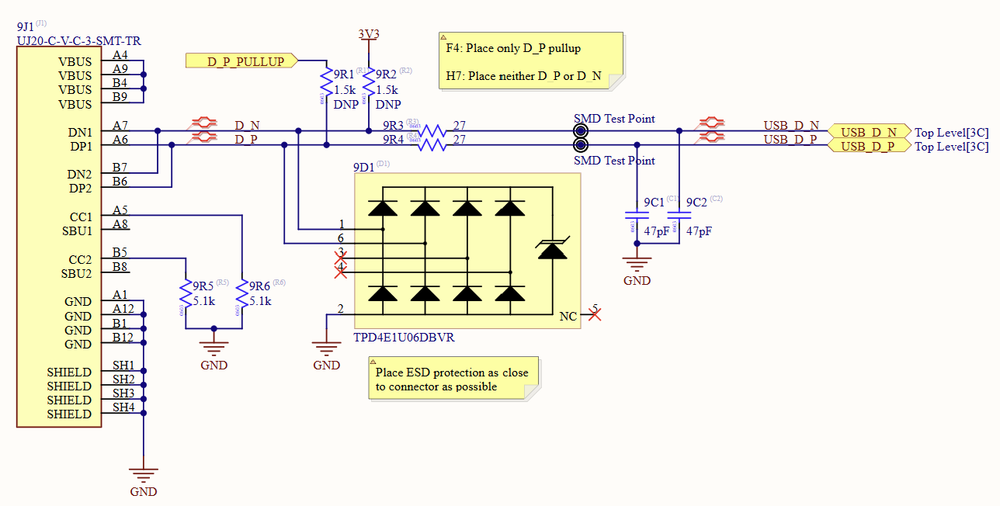
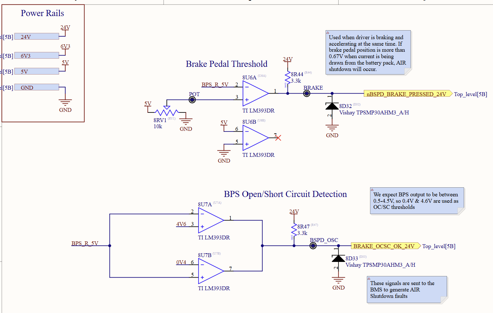

Designed and routed a custom embedded telemetry PCB for the UBC Formula SAE Electric racecar to aggregate rear-packaging data. The module processes onboard IMU kinematics and I2C suspension telemetry, broadcasting the data over the vehicle's CAN network while independently driving the brake lights.

3D Board View

PCB Routing (GND Polygons Disabled)
Hardware Revisions & Engineering Changes
Microcontroller Migration
Upgraded the core architecture from an STM32F4 to an STM32H5 microcontroller. This transition provided enhanced processing capabilities for local IMU kinematics and integrated seamlessly with a dedicated CAN transceiver to guarantee robust, high-speed data transmission to the main vehicle control unit.

Power Delivery Optimization
Redesigned the module's power delivery network by optimizing the topologies of the 5V and 3.3V buck converters. This revision significantly reduced heat generation and stabilized the voltage rails to ensure clean power delivery for sensitive onboard analog instrumentation.

USB Interface Integration
Re-engineered the USB interface schematic to guarantee proper hardware-level enumeration and reliable serial communication with the newly integrated STM32H5 architecture, facilitating easier firmware deployment and diagnostic debugging.

Analog Signal Conditioning
During physical board testing, the operational amplifier was found to be clipping on the 5V rail. I resolved this hardware bug by rerouting the op-amp's power supply to the 24V rail, providing the necessary voltage headroom to capture the full analog signal range without distortion.

Key Skills & Takeaways
- Architecture Design: Transitioning logic systems between microcontroller families (STM32F4 to STM32H5) and implementing mixed-protocol networks (I2C to CAN).
- Hardware Debugging: Identifying and resolving analog clipping issues through physical bench testing and oscilloscope validation.
- Power Electronics: Designing and tuning step-down buck converters for efficient, low-noise power distribution.
- Signal Integrity: Optimizing PCB layouts with dedicated ground plane pours to isolate digital signals from high-voltage electrical noise.